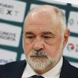
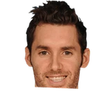

Real Madrid coach Pablo Laso on Rudy Fernandez:
“He has the feeling that he doesn't want to be a trade bait. To me, I wish he comes back as soon as possible.”

Pablo Laso on Rudy FernandezTwitter
5 quotes about Rudy Fernandez from 4 players, coaches and executives, newest first. Each one links to its original source.
Real Madrid coach Pablo Laso on Rudy Fernandez:
“He has the feeling that he doesn't want to be a trade bait. To me, I wish he comes back as soon as possible.”

Pablo Laso on Rudy FernandezTwitterSerge Ibaka on rumors about Thunder's interest in Rudy Fernandez:
“It would be great if we signed him. He's a good player. If we get him, I'm sure he would do great here.”
Spain coach Sergio Scariolo on Rudy Fernandez after his final game:
“I’ve been blessed to coach him… [I saw] him never giving up or surrendering to the physical gaps he had at the 3 position with any opponent he had to face during his career. So competitive and committed.”
Spain coach Sergio Scariolo on Rudy Fernandez after his final game:
“I’ve been blessed to coach him… [I saw] him never giving up or surrendering to the physical gaps he had at the 3 position with any opponent he had to face during his career. So competitive and committed.”
Serge Ibaka on rumors about Thunder's interest in Rudy Fernandez:
“It would be great if we signed him. He's a good player. If we get him, I'm sure he would do great here.”
Real Madrid coach Pablo Laso on Rudy Fernandez:
“He has the feeling that he doesn't want to be a trade bait. To me, I wish he comes back as soon as possible.”
Real Madrid head coach Pablo Laso on signing Rudy Fernandez:
“You have to honor contracts, but sometimes contracts are made to be broken. He has to decide. What I don't understand so much is the signing of a player just to play three months, because they will give little to nothing to the team.”
“We've been hanging out a lot and doing stuff, just trying to keep (Fernandez's) mind off things; we enjoy each other's company,”